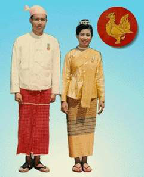

|
ประเทศพม่า  เครื่องแต่งกาย ชาวพม่าทั้งหญิงและชายนิยมนุ่งโสร่ง ที่เรียกว่า “ลองยี”ซึ่งมีทั้งผ้าฝ้ายและไหมที่มีสีสด ของผู้หญิงจะมีลายเชิงด้านล่างและมีลวดลายเล็ก ๆ กระจายทั่วผืนผ้า ลวดลายของแต่ละท้องถิ่นจะต่างกัน ผ้าที่ทอมาจากเมืองอมรปุระเป็นลวดลายดอกไม้เครือไม้ หรือเป็นดอกเป็นลายตามขวาง ไม่นิยมใช้เข็มขัด สวมเสื้อตัวสั้นคอกลม ผ่าอกติดกระดุมn5 เม็ด แขนกระบอกยาวจรดข้อมือ บางครั้งเป็นแขนสั่น เลยไหล่ลงมาเล็กน้อย ผ้าตัดเสื้อนิยมใช้ผ้าเนื้อบาง สีสด เช่น ผ้ามัสลิน ผ้าป่าน หรือผ้าไนลอน สวมรองเท้าคีบรองเท้าตะ ทั้ง หญิงและชาย แต่ของหญิงจะเป็นสี มีลวดลายเป็นดอกดวง |